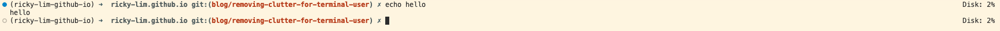

In the world of data science, data can accumulate suddenly 📈 and consume most of our available storage 🪫, which often goes unnoticed 🤐. This can be the root of annoying issues 🤕. In the worst case, when my disk completely filled up, I couldn’t even reach my remote machine anymore 😭.
The other day, I run into this same issue when my disk bloated 🫃 to nearly 90%.
So it was time to roll up my sleeves to start my digital clean-up journey 🧹.
To make my journey fun and also more efficient 🚀, I began looking for a terminal tool to assist — and that’s when I came across ncdu 💡.
ncdu?ncdu is short for NCurses Disk Usage, or to me it's a TUI for our traditional du.
With ncdu, we can scan and interactively navigate our directories to hunt for disk hogs and remove them.
Terminal users can also have a nice TUI too when it comes to cleaning up.
sudo apt install ncdu # Debian/Ubuntu
brew install ncdu # macOS
Run it directly with ncdu and it's very much intuitive to use.
The TUI interface shows disk usage with sortable lists from the most bloated directory.
Use arrow keys and enter to drill down.
To delete the bloated files simply press d key.
To avoid future issue with running out of disk space, I also added my terminal prompt with disk usage, ⚓️️ docked at the right side of my terminal.
A simple way to add disk usage information:
# Inside my .zshrc file
disk_usage() {
# Replace with the path ('/') you want to check
df / | awk 'NR==2 {print $5}'
}
# This is to dock at the right side
RPROMPT='Disk: $(disk_usage)%'

In the world of data science, disk space can be as valuable as compute power:
ncdu to manage storage interactively and prevent annoying disk-related disruptions.